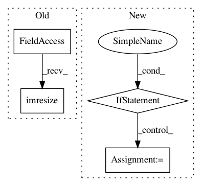

30c2b2fc4586d1bf6b50e1b6f2c2a5c04acf2947,rl_coach/filters/observation/observation_rescale_size_by_factor_filter.py,ObservationRescaleSizeByFactorFilter,filter,#ObservationRescaleSizeByFactorFilter#Any#Any#,60
Before Change
observation = observation.astype("uint8")
// rescale
observation = scipy.misc.imresize(observation,
self.rescale_factor,
interp=self.rescaling_interpolation_type.value)
return observation
def get_filtered_observation_space(self, input_observation_space: ObservationSpace) -> ObservationSpace:
After Change
observation = observation.astype("uint8")
rescaled_output_size = tuple([int(self.rescale_factor * dim) for dim in observation.shape[:2]])
if len(observation.shape) == 3:
rescaled_output_size += (3,)
// rescale
observation = resize(observation, rescaled_output_size, anti_aliasing=False, preserve_range=True).astype("uint8")
return observation
In pattern: SUPERPATTERN
Frequency: 3
Non-data size: 4
Instances
Project Name: NervanaSystems/coach
Commit Name: 30c2b2fc4586d1bf6b50e1b6f2c2a5c04acf2947
Time: 2019-05-23
Author: gal.leibovich@intel.com
File Name: rl_coach/filters/observation/observation_rescale_size_by_factor_filter.py
Class Name: ObservationRescaleSizeByFactorFilter
Method Name: filter
Project Name: ageitgey/face_recognition
Commit Name: c261b64d51ef8f55ad04f7b09cad7da9deacafef
Time: 2018-02-27
Author: ageitgey@gmail.com
File Name: face_recognition/cli.py
Class Name:
Method Name: test_image
Project Name: SullyChen/Autopilot-TensorFlow
Commit Name: a5bb98a4f7cc8947afa7ca6dc546c7e94c3e982c
Time: 2020-05-12
Author: sullyfchen@gmail.com
File Name: run.py
Class Name:
Method Name: